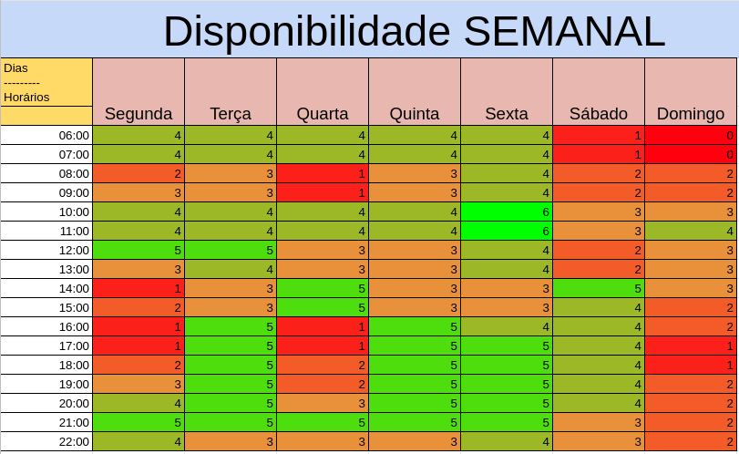

Planejamento do Projeto
Histórico de Versões
| Data | Versão | Descrição | Autores | Revisor |
|---|---|---|---|---|
| 02/03/2021 | 0.1 | Criação da Wiki Planejamento | Gabriela Pivetta, Luis G. | Eduarda |
| 02/03/2021 | 0.2 | Atualização da Wiki Planejamento | Gabriela, Luis, Eduarda, Herya | Eduarda |
| 02/03/2021 | 0.3 | Correção de Erros de Digitação | Eduarda Servidio | ------- |
| 02/03/2021 | 0.4 | Melhora do visual (justificação dos textos) | Eduarda Servidio | ------- |
| 02/03/2021 | 0.5 | Adição de descrição de sites analisados | Eduarda, Hérya, Luis | ------- |
Justificativa de escolha do site
 .
.
Em consenso, a equipe escolheu o site CIL 2 BSB para a realização do projeto da matéria Interação Humano-Computador. Vimos no site, um possível potencial de melhora, como por exemplo, melhorar a estética em geral e analisar algumas funcionalidades.
Outros sites analisados
| Logo | Nome | Descrição |
|---|---|---|
| Ministério Público da União | O site do Ministério Público da União foi avaliado pelos integrantes Pedro Haick e Gabriela Pivetta |
|
| Confederação Nacional de Municipios | O site da Confederação Nacional de Municípios(CNM) foi avaliado pela integrante Hérya Rodrigues. A CNM é uma organização municipalista, apartidária, independente e sem fins lucrativos. Sua atuação é voltada à representação político-institucional dos municípios e ao fortalecimento da gestão municipal. O site da CNM é utilizado para difundir o movimento municipalista, além de noticiar acerca de acontecimentos políticos e sociais do Estado Brasileiro. |
|
| Saci | O site do SACI foi avaliado pelo integrante Luis Marques e consiste em um portal que permite que o usuário realize o logbook (na aviação chamada de Caderneta Individual de Voo) de suas horas voadas, além de possibilitar a abertura de processos para concessão de licenças e habilitações para os aeronautas. |
|
| Detran DF | O site do DetranDF foi avaliado pela integrante Eduarda Servidio. O site do Detran DF é um site do governo que visa a passar informações sobre o trânsito do Distrito Federal e meios e processos vinculados a ele. |
Heatmap

Os 6 membros da equipe possuem disponibilidade nas Sextas de 10h as 12h, bem como nas aulas assíncronas da disciplina.
Cronograma das atividades
| Entrega | Data de entrega esperada | Data de entrega limite |
|---|---|---|
| Planejamento do Projeto | 04/03/2021 | 05/03/2021 |
| Perfil do Usuário, Personas e Análise de Tarefas | 12/03/2021 | 19/03/2021 |
| Princípios Gerais de Projeto | 19/03/2021 | 26/03/2021 |
| Planejamento de Avaliação e Planejamento dos Resultados | 02/04/2021 | 09/04/2021 |
| Relato dos resultados do Story Board | 16/04/2021 | 23/04/2021 |
| Relato dos resultados do Protótipo de papel | 23/04/2021 | 30/04/2021 |
| Projeto Final | 03/05/2021 | 10/05/2021 |
Estipulamos uma dedicação semanal de 8 horas por membro da equipe.
Ferramentas
| Ferramenta | Nome | Descrição |
|---|---|---|
| Google Suite | Ferramenta usada para auxílio na criação dos slides | |
| Microsoft Office | Ferramenta para criação de planilhas | |
 |
Microsoft Teams | Ferramenta usada para reuniões em equipe |
| Telegram | Ferramenta usada para comunicação entre os membros | |
 |
Visual Studio Code | Ferramenta de edição de códigos utilizada pela equipe |
| GitHub | Ferramenta usada para armazenar os documentos do projeto | |
 |
Photoshop | Ferramenta usada para criação dos slides finais |
 |
MKdocs | Ferramenta usada para criação do Site wiki do projeto. |
Contribuições para a Primeira Apresentação
| Realização | Membro que contribuiu |
|---|---|
| Escolha do site | Todos os membros |
| Primeira Avaliação do site | Giovana Dionisio |
| Escolha das ferramentas | Eduarda, Gabriela, Giovana, Herya, Luis |
| Definição do cronograma | Eduarda, Gabriela, Giovana, Herya, Luis |
| Conteúdo dos Slides da apresentação | Eduarda, Gabriela, Giovana, Herya, Luis |
| Design dos Slides | Eduarda Servidio |
| Gravação do Vídeo da Apresentação | Todos os membros |
| Edição do vídeo/Link da Apresentação | Luis Gustavo |
| Início da organização do Git do projeto | Eduarda S, Gabriela P, Luis G. |